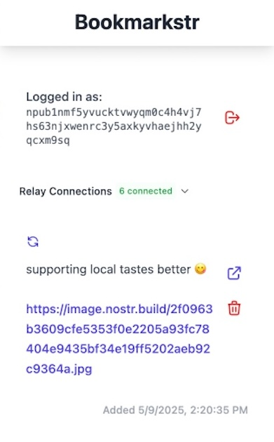

Access Your Nostr Bookmarks in your browser
So you added your bookmarks when scrolling down your favourite mobile client while waiting in in the supermarket line. Now you are back in your armchair, have a cup of tea and want to read them carefully.

Get Bookmarkstr
Start managing your Nostr bookmarks on your desktop.